The team
I'm fortunate to work with a wonderful team at the University of Toronto — currently six postdoctoral fellows, five graduate students, and twenty undergraduate researchers. Want to join? See opportunities.
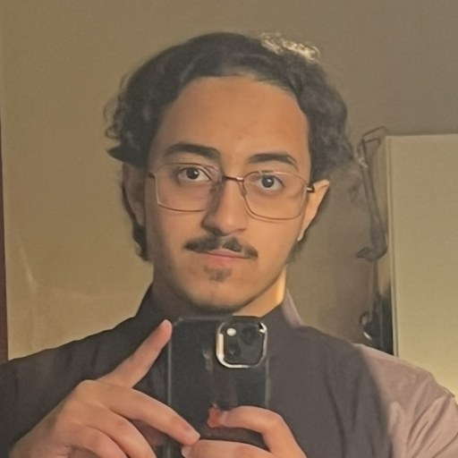
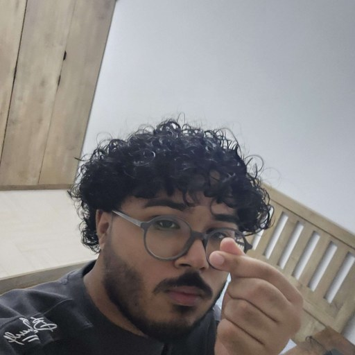
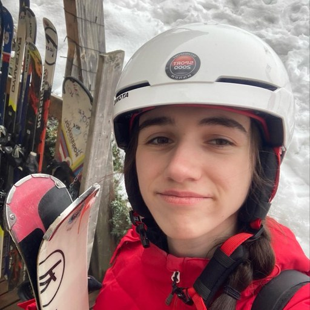
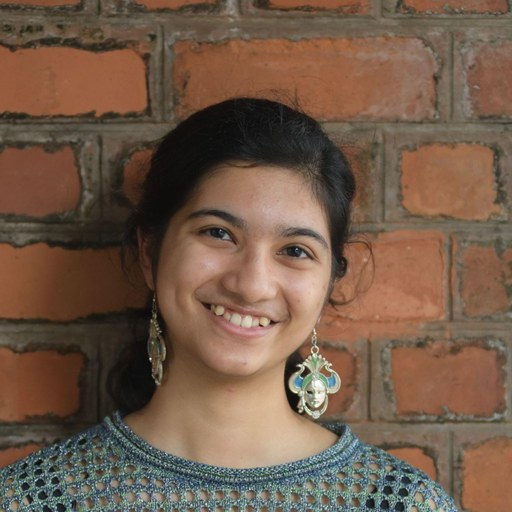
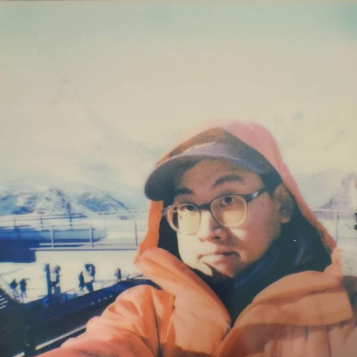
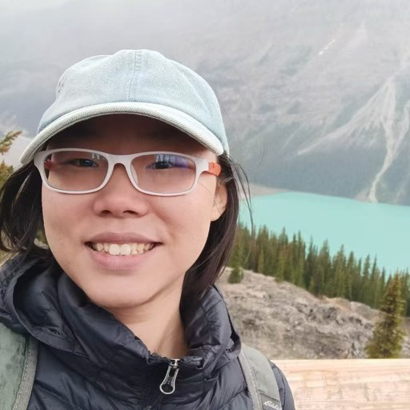
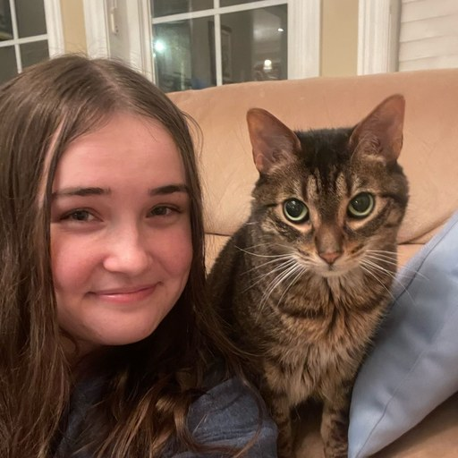
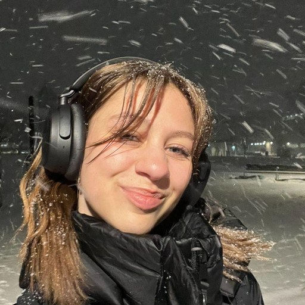
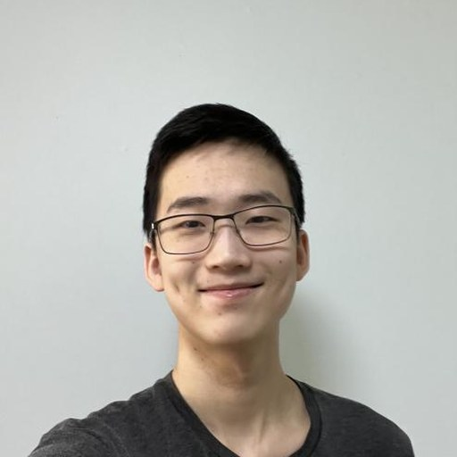
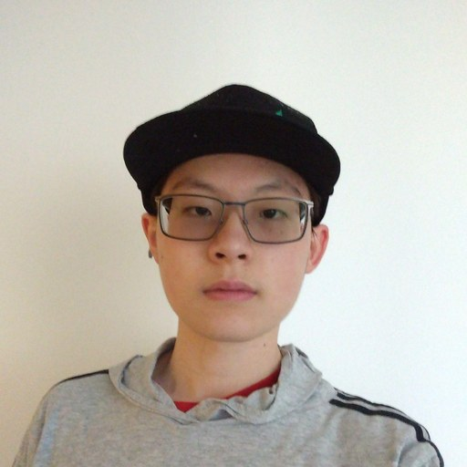
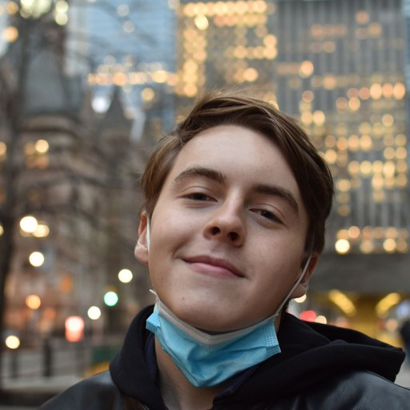
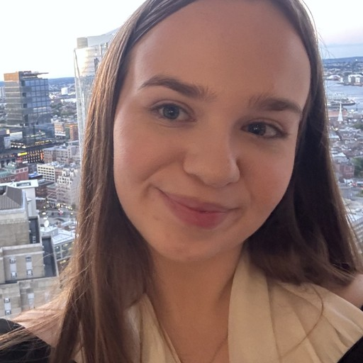
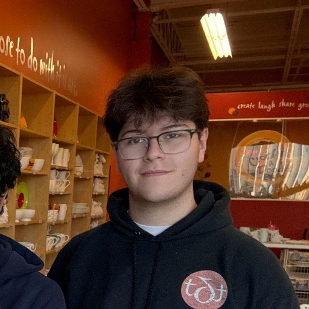
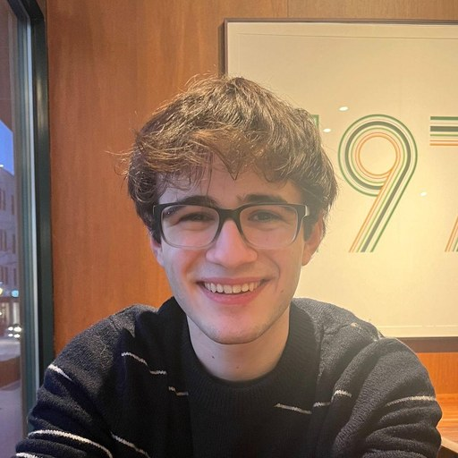
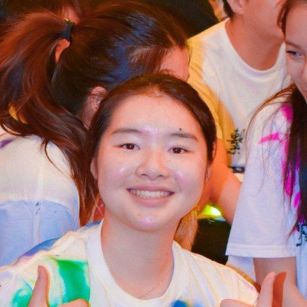
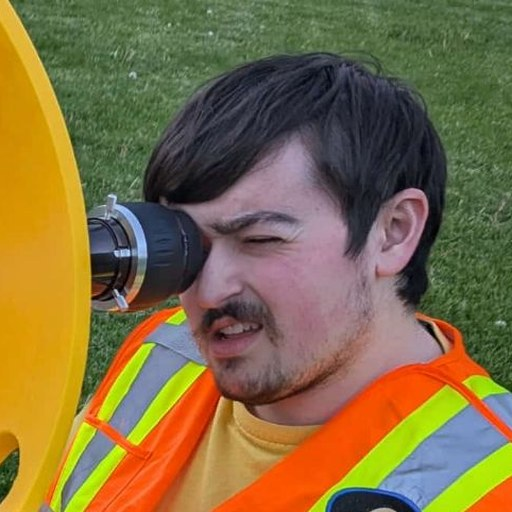
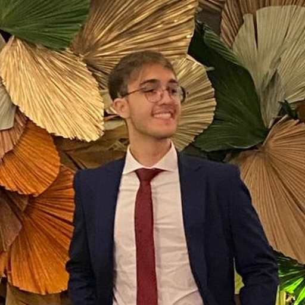
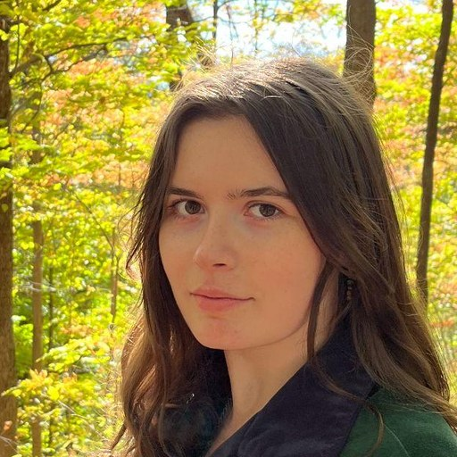
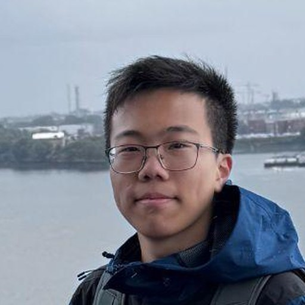
Where they go next
Former group members have gone on to graduate programs and faculty positions at leading institutions — including MIT, Yale, UC Berkeley, Caltech, Columbia, Waterloo, Arizona, Indiana, and the University of Washington. A full list of mentees and their publications is in my CV.